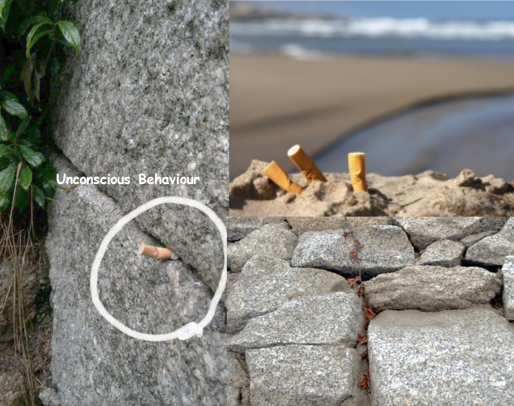
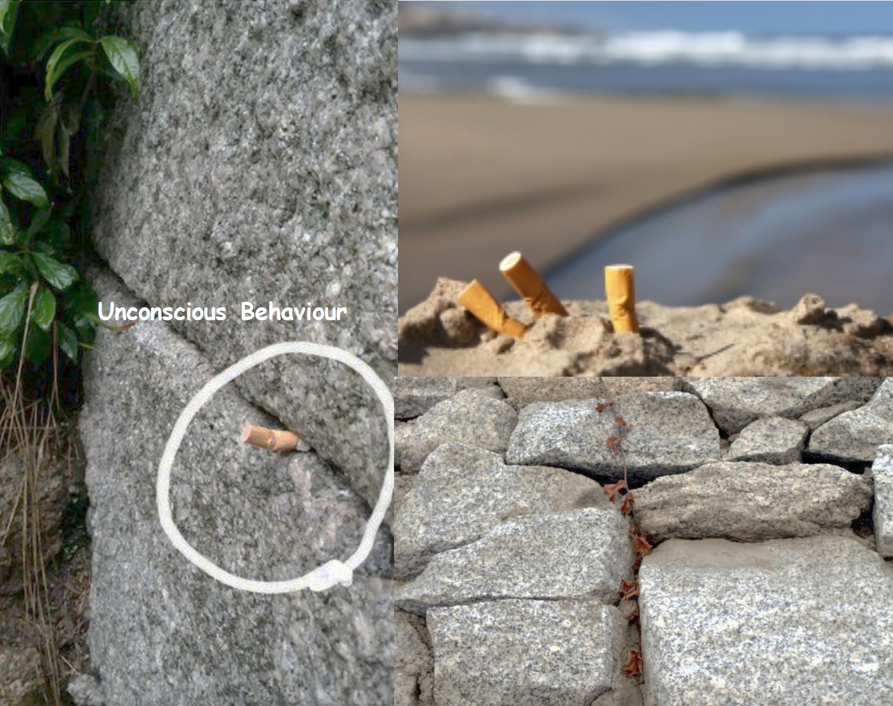

Backgrounds
This product is made as a part of the participatory workshop led by two German-based industrial designers under the theme "Visualizing Invisibles".
The details of the workshop are illustrated further at 12 Monthly

An Ashtray visualizing the woes and agonies
As my biggest interests lies in exploring human's unscious behaviours, I focused on correlating two different objects with the story.
 
When I visited the castles around the Europe back in 2015, I was able to discover a number of cigarattes crammed between the cracks of the castle. The cigarattes often left stains on the stone or were just left untouched for many years.
When stood on the spot, I was unconsciously immersed in the feeling of empathy from tons of people stood in the same place across generations. Though there was only the silent breeze touching by cheek, I took courage from them.
In the same way, I would like to deliver the same feeling of empathy within the product. When discovering the traces from various people within different woes and agonies, I expect the one feels the tinse of comfort that he/she is not alone in this world.